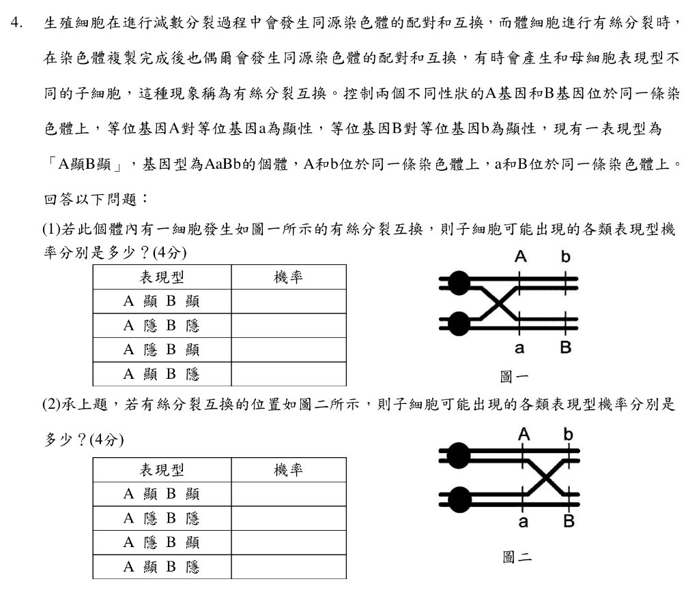
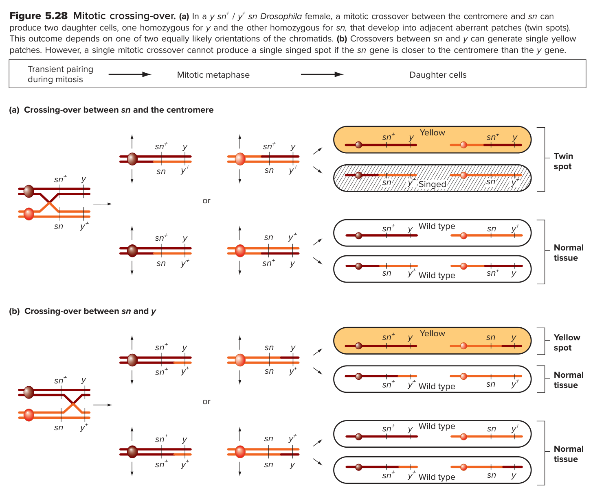
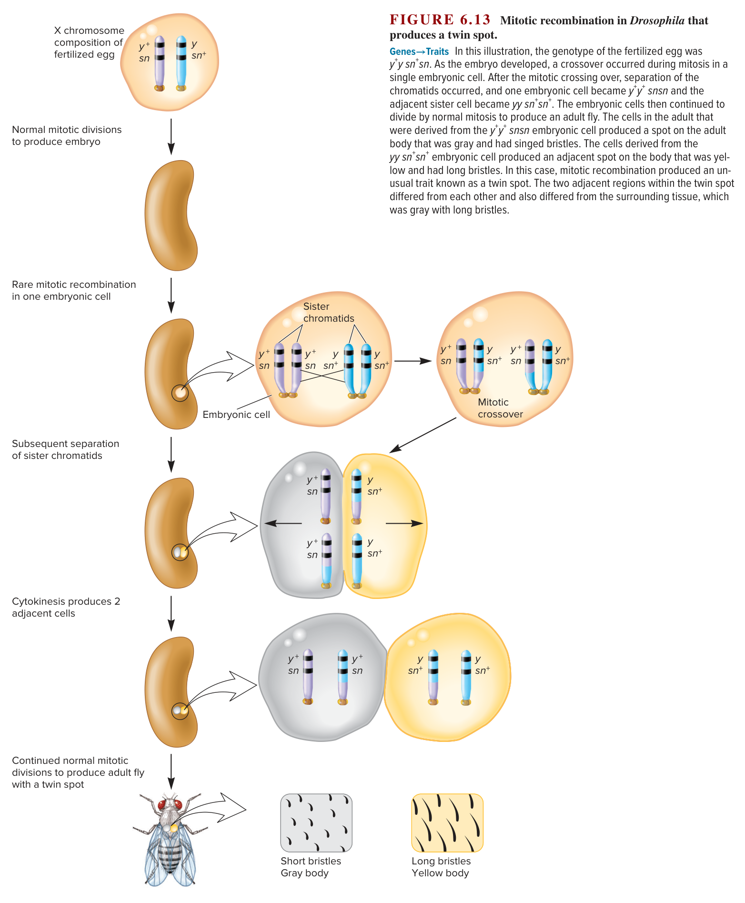
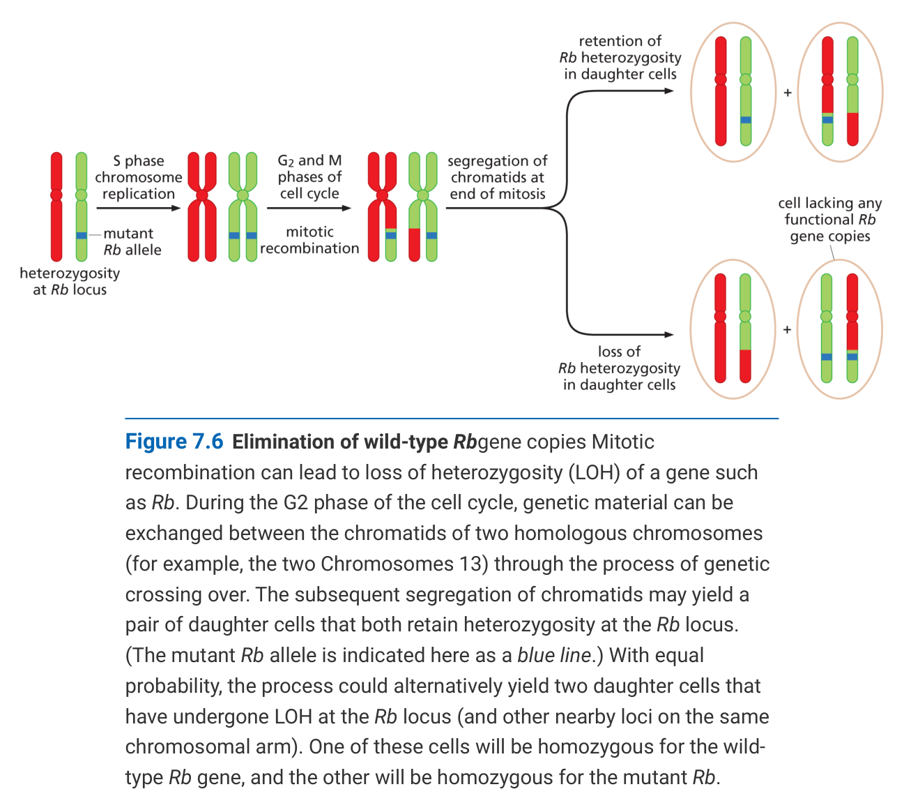
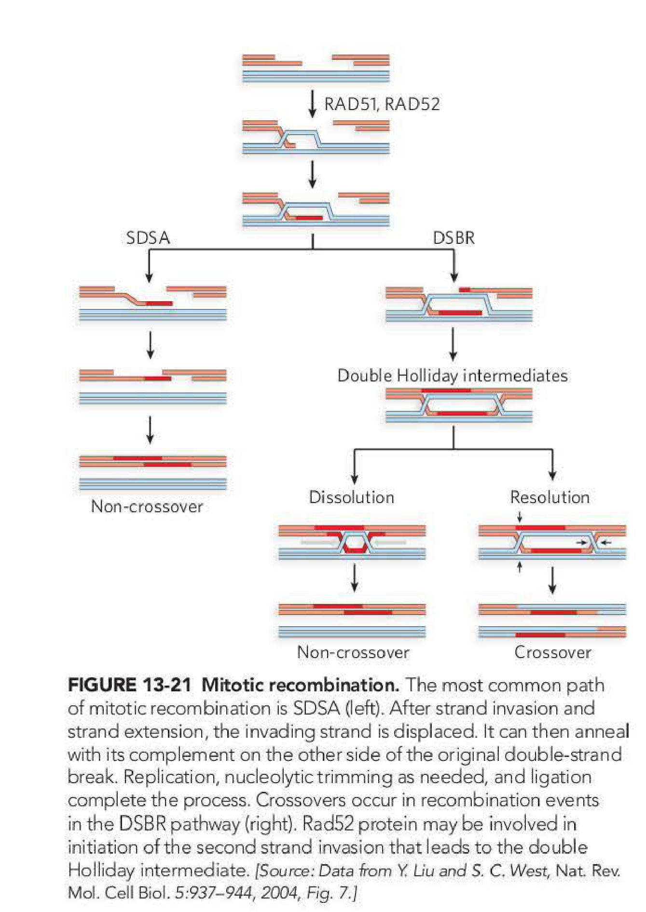

有絲分裂互換與重組：中節位置、雙生斑與子細胞表現型機率推導
完整拆解 113 學年度（2024 年）全國聯招生物科綜合題第 4 題，並追溯其原圖藍本 Goldberg Genetics 7e Fig. 5.28：為什麼體細胞互換點位於「中節–A 之間」或「A–B 之間」會徹底改變子細胞表現型機率？再延伸至 Curt Stern 雙生斑實證與抑癌基因 RB1 之異型合子性喪失（LOH）。
有絲分裂互換後，兩條同源染色體在中期各自獨立排列於赤道板、後期由姊妹染色分體分離（形成 2 種等機率排列組合）；因此，只有位於「互換點遠端（遠離中節那側）」的異型合子基因座，才有機會變成同型合子（異型合子性喪失，LOH），而「互換點近端（靠近中節那側）」的基因座永遠維持原本的異型合子狀態。
• 圖一（中節–A 間互換）：A 顯 B 顯 1/2｜A 隱 B 隱 0｜A 隱 B 顯 1/4｜A 顯 B 隱 1/4（產生雙生斑）。
• 圖二（A–B 間互換）：A 顯 B 顯 3/4｜A 隱 B 隱 0｜A 隱 B 顯 0｜A 顯 B 隱 1/4（僅產生單斑）。
01 113 全國聯招綜合題第 4 題完整推導

🔍 點擊圖片放大檢視AaBb 的體細胞，且採反式連鎖（A 與 b 位於同一條染色體上，a 與 B 位於另一條同源染色體上）。題目分別給出兩種有絲分裂互換位置（圖一：中節與 A 之間；圖二：A 與 B 之間），要求計算子細胞出現四類表現型的機率。
體細胞完成 S 期 DNA 複製後，上方同源染色體（記作中節 C1）原本連著兩條 Ab 姊妹染色分體；下方同源染色體（記作中節 C2）原本連著兩條 aB 姊妹染色分體。非姊妹染色分體互換時，中節本身不換位，只要從黑圓點往右沿著線段走過交叉點，就能準確寫出 C1 與 C2 各自帶著哪兩條染色分體。
有絲分裂沒有減數分裂第一分裂的「同源染色體分離」，而是每條複製染色體各自排在赤道板上，後期中節分裂、兩條姊妹染色分體分別被拉向兩極。因此，每個子細胞必從 C1 拿走 1 條染色分體、同時從 C2 拿走 1 條染色分體；由於 C1 與 C2 的朝向彼此獨立，會形成 2 種機率各佔 1/2 的分離組合（共 4 個等機率子細胞結果）。
(1) 圖一：互換發生在「中節與 A 基因座」之間
沿著圖一交叉點追蹤，交換後兩條同源染色體各自連著的姊妹染色分體為：
• 上方中節（C1）：Ab（未互換股）、aB（已互換股）
• 下方中節（C2）：Ab（已互換股）、aB（未互換股）
| 有絲分裂分離排列 | 發生機率 | 子細胞甲（基因型 → 表現型） | 子細胞乙（基因型 → 表現型） | 組織表徵 |
|---|---|---|---|---|
| 排列一（同型合子化） | 1/2 | Ab / Ab（AAbb）→ A 顯 B 隱 |
aB / aB（aaBB）→ A 隱 B 顯 |
兩塊相鄰異常斑塊（雙生斑） |
| 排列二（維持異型合子） | 1/2 | Ab / aB（AaBb）→ A 顯 B 顯 |
aB / Ab（AaBb）→ A 顯 B 顯 |
與周圍正常組織無異 |
將兩種等機率排列所產生的全部 4 個子細胞合併計算，得到圖一解答：
| 表現型 | 子細胞出現機率 | 對應基因型與原因 |
|---|---|---|
| A 顯 B 顯 | 1/2（50%） | AaBb（2/4） |
| A 隱 B 隱 | 0 | 全組染色分體僅有 Ab 與 aB，不可能出現 aabb |
| A 隱 B 顯 | 1/4（25%） | aaBB（1/4） |
| A 顯 B 隱 | 1/4（25%） | AAbb（1/4） |
(2) 圖二：互換發生在「A 與 B 基因座」之間
沿著圖二交叉點追蹤，交換發生在 A 之後、B 之前，因此兩條同源染色體各自連著的姊妹染色分體為：
• 上方中節（C1）：Ab（未互換股）、AB（已互換股）
• 下方中節（C2）：ab（已互換股）、aB（未互換股）
| 有絲分裂分離排列 | 發生機率 | 子細胞甲（基因型 → 表現型） | 子細胞乙（基因型 → 表現型） | 組織表徵 |
|---|---|---|---|---|
| 排列一（僅 B 同型合子化） | 1/2 | Ab / ab（Aabb）→ A 顯 B 隱 |
AB / aB（AaBB）→ A 顯 B 顯 |
僅出現 B 隱性的單斑 |
| 排列二（維持雙異型合子） | 1/2 | Ab / aB（AaBb，反式）→ A 顯 B 顯 |
AB / ab（AaBb，順式）→ A 顯 B 顯 |
與周圍正常組織無異 |
將兩種等機率排列所產生的全部 4 個子細胞合併計算，得到圖二解答：
| 表現型 | 子細胞出現機率 | 對應基因型與原因 |
|---|---|---|
| A 顯 B 顯 | 3/4（75%） | AaBB（1/4）＋ AaBb（2/4） |
| A 隱 B 隱 | 0 | C1 兩股皆含 A，子細胞必為 Aa，絕無 aa |
| A 隱 B 顯 | 0 | 同上，A 基因座恆為 Aa，絕不表現 A 隱 |
| A 顯 B 隱 | 1/4（25%） | Aabb（1/4） |
- 地雷 1：拿減數分裂的規則來分——誤以為 4 條染色分體會分進 4 個單倍體細胞（
Ab、aB、AB、ab），或誤以為 C1 整條去左邊、C2 整條去右邊。有絲分裂的子細胞仍是二倍體（2n），必由 C1、C2 各抽 1 條染色分體配對。 - 地雷 2：在圖二看到
ab染色分體，就以為會出現「A 隱 B 隱」——錯！雖然 C2 確實有一股變成ab，但與它配對的另一股來自 C1（只有Ab或AB，都帶顯性A），因此組出來只可能是Aabb或AaBb，絕不可能出現aabb。
02 專有名詞解析、減數 vs. 有絲互換，與癌症 LOH 延伸
核心專有名詞白話對照
| 專有名詞（中英對照） | 教科書定義 | 高中生易懂說明 |
|---|---|---|
| 有絲分裂互換／重組 （mitotic crossing-over / recombination） |
二倍體體細胞在 DNA 複製後的 S／G2 期至有絲分裂期間，同源染色體短暫配對並於非姊妹染色分體間交換片段的罕見事件（Brooker 8e；Goldberg 7e；Weinberg）。 | 互換不是減數分裂專利；體細胞偶爾也會因 DNA 斷裂修復，讓父源、母源染色體交換一段，進而在體內形成局部表現型不同的細胞斑塊。 |
| 中節（centromere） | 複製後染色體上連接兩條姊妹染色分體、並於細胞分裂時供紡錘絲附著與控制分離方向的特定區域（臺灣教育部審定高中生物名詞）。 | 判讀有絲分裂互換的「錨點」。中節不會被交換，從中節往外看，靠近中節的那側不會變同型合子，遠離中節那側才有機會。 |
| 雙生斑／雙斑 （twin spot） |
反式雙異型合子（如 y sn⁺ / y⁺ sn）體細胞於中節與近端基因間發生有絲分裂互換後，兩個互補同型合子子細胞各自增殖形成的相鄰異常組織斑塊（Brooker 8e；Goldberg 7e）。 | 1936 年 Curt Stern 在果蠅身上的經典證據：灰體長毛的背景裡，突然相鄰冒出一塊「灰體焦毛」與一塊「黃體長毛」，證明兩塊源自同一對分開的姊妹子細胞。 |
| 異型合子性喪失 （loss of heterozygosity, LOH） |
原本為異型合子的體細胞，因有絲分裂重組、基因轉換、染色體缺失或不分離而喪失正常等位基因，轉變為同型合子或半合子狀態（Weinberg；Lodish 9e）。 | 細胞原本一好一壞（例如抑癌基因 RB⁺/RB⁻），體細胞互換把兩份壞基因送進同一個子細胞（RB⁻/RB⁻），煞車完全失靈，成為腫瘤發生的常見「二次打擊」。 |
減數分裂互換 vs. 有絲分裂互換
| 比較面向 | 減數分裂互換（Meiotic） | 有絲分裂互換（Mitotic） |
|---|---|---|
| 發生細胞與時期 | 生殖母細胞；減數分裂前期 I（同源染色體聯會形成四分體） | 體細胞；分子重組常於複製後的 S／G2 期啟動，於有絲分裂分離呈現 |
| 啟動機制與關鍵蛋白 | 細胞主動編程：由減數分裂專一性酵素（Spo11、Dmc1 等）主動切斷並高頻互換 | 意外修復副作用：由複製叉遇模板斷裂或輻射造成 DSB 啟動；完全依賴 Rad51（不用 Dmc1），多走不互換的 SDSA 途徑，少數經 DSBR 雙荷利第中間體才互換（Cox 2e） |
| 發生頻率 | 極高（每對同源染色體通常至少 1 次） | 極罕見（約每百萬次分裂 1 次，或 10⁻⁵–10⁻⁴／細胞世代） |
| 後期分離模式 | 減數 I 同源染色體分離 → 減數 II 姊妹染色分體分離 | 同源染色體獨立排列於中期板，直接進行姊妹染色分體分離 |
| 遺傳與醫學後果 | 產生重組配子，可遺傳給下一代 | 不遺傳給子代（除非進入生殖系）；造成個體遺傳鑲嵌體（雙生斑、酵母菌落分區）或抑癌基因 LOH |
無論是果蠅體細胞基因定位還是人類視網膜母細胞瘤（RB1 位於第 13 號染色體），一個基因座要透過有絲分裂互換從異型合子變為同型合子，互換點必須落在「中節與該基因之間」。因此基因離中節越遠，兩者之間可供互換發生的染色體區段越長，發生同型合子化（LOH）的機率就越高（Weinberg Biology of Cancer 補充側欄 7.2）。在散發性與遺傳性視網膜母細胞瘤中，透過有絲分裂重組發生 LOH 的頻率（10⁻⁵–10⁻⁴）遠高於獨立第二次點突變（10⁻⁶），也是 Lodish 9e 明確點名「造成 LOH 最頻繁的機制」。
03 四大原文教科書原圖對照拆解

🔍 點擊圖片放大檢視sn⁺ / sn 換成 A / a、把 y / y⁺ 換成 b / B，(a) 就是 113 全國聯招圖一，(b) 就是圖二！一眼即可看懂 2 種等機率中期排列如何得出 1/2 : 1/4 : 1/4 與 3/4 : 1/4。

🔍 點擊圖片放大檢視
🔍 點擊圖片放大檢視
🔍 點擊圖片放大檢視04 5 部原文正典中英對照文獻考證
經全面檢索，普通生物學譯本（Campbell 12e／13e、Sadava 12e、Solomon 11e、Freeman 8e）、Alberts ECB6 與臺灣高中選修生物跨版本整合目前皆未設「有絲分裂互換」專節，本題屬大學遺傳學與癌症生物學進階考點。術語嚴格依臺灣教育部《生命科學名詞》：centromere 譯為中節、chromatid 譯為染色分體、non-sister chromatid 譯為非姊妹染色分體；twin spot 依 Vault 遺傳學譯本採雙生斑／雙斑（非「孿生斑」）。
05 教甄進階變形與 10 秒速解口訣
- 互換點近端（靠近中節）：兩條姊妹染色分體沒交換 → 每個子細胞 100% 維持原本的異型合子（例如圖二的 A 座恆為
Aa，所有「A 隱」直接填 0）。 - 互換點遠端（遠離中節）：上下兩條同源染色體各自變成「1 顯 1 隱」→ 隨機各抽 1 股，遠端整個區段必然呈現 1/4 同型合子甲 : 1/2 維持原異型合子 : 1/4 同型合子乙。
- 變形 1：把反式連鎖（
Ab/aB）改成順式連鎖（AB/ab）
若母細胞為順式AB/ab且互換發生在「中節與 A 之間」，排列一會產生AABB（A 顯 B 顯）與aabb（A 隱 B 隱），排列二產生兩個AaBb（A 顯 B 顯）→ 結果變成 A 顯 B 顯 3/4、A 隱 B 隱 1/4，兩種單顯性皆為 0，不會出現雙生斑，而是單獨的雙隱性斑！ - 變形 2：反推染色體上基因與中節的相對順序（體細胞定位）
給定反式雙異型合子出現「雙生斑」與「單獨 X 隱性斑」，卻幾乎從未出現「單獨 Y 隱性斑」→ 立刻反推順序必為 中節 — Y — X（X 在遠端、Y 在近端）。 - 變形 3：結合癌症抑癌基因考「為何有絲分裂重組比第二次突變常見？」
引用 Weinberg 與 Lodish：單點突變率約 10⁻⁶，而有絲分裂重組造成整個遠端染色體臂同型合子化（LOH）的頻率達 10⁻⁵–10⁻⁴，且基因距離中節越遠、發生 LOH 的風險越高。
搭配閱讀 《同源染色體 vs. 雙套（2n），與 AaBb × AaBb 自交如何判斷互換？》（比較減數分裂連鎖互換），以及 《染色體斷裂成因與貓叫症（5p 缺失）》（了解體細胞 DNA 雙股斷裂 DSB 的自然成因）。